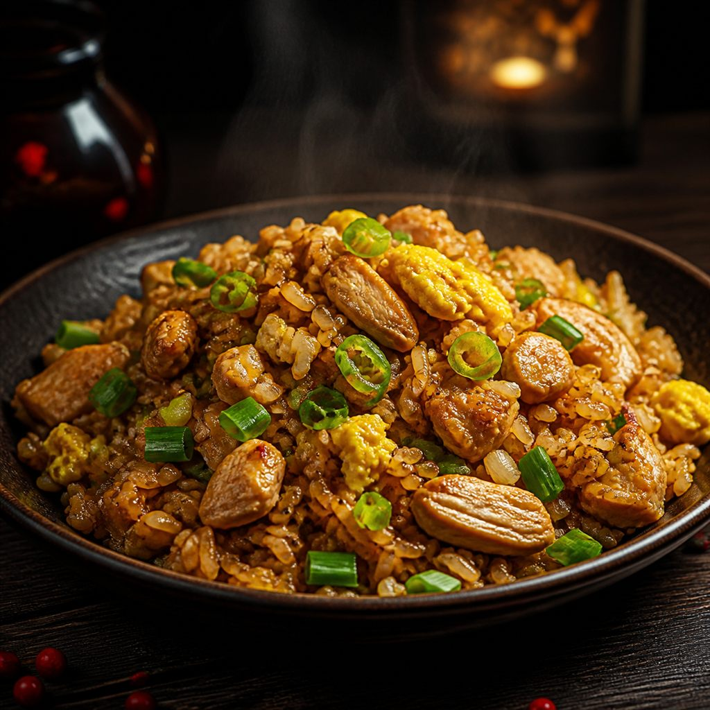

Arroz Chaufa
Arroz salteado al wok con pollo, huevo, cebolla china y sillao, un clásico de la cocina chifa.
Expo gastronómica · Fusión cultural
Una experiencia estática pensada para tablet y QR: cada plato tiene su propia vista con nombre, descripción breve e ingredientes principales.
En la mesa solo se necesita el QR y el nombre del plato. La tablet puede abrir la misma página para presentar el detalle al público.
Paleta sugerida
El rojo aporta energía y presencia, el negro da contraste elegante y el dorado refuerza la idea de celebración y prestigio culinario. Se añadió un brillo sutil para que la página se vea viva sin perder legibilidad.
Códigos QR
Cada tarjeta usa la URL actual del sitio con el ancla del plato. Así puedes imprimir el QR o mostrarlo en la mesa y dirigir al público directamente al detalle correcto.
Vista para expositor
Si el código QR abre esta URL con un identificador del plato, la vista se enfoca solo en ese contenido. Así el expositor puede cambiar de plato sin salir del sitio.
Plato destacado
Arroz salteado al wok con pollo, huevo, cebolla china y sillao, un clásico de la cocina chifa.
La mesa puede mostrar solo el nombre y el enlace codificado en el QR.
Arroz salteado al wok con pollo, huevo, cebolla china y sillao, un clásico de la cocina chifa.
Tallarines salteados con carne, verduras y salsa oriental con un toque peruano muy sabroso.
Lomo de res con cebolla, tomate, ají y papas fritas, emblema de la mezcla criolla y china.
Combinación generosa de arroz chaufa, tallarín y carnes, ideal para porciones abundantes.
Masitas rellenas fritas o en sopa, con carne sazonada y una textura crujiente o suave.
Wantan crocante cubierto con salsa agridulce, verduras y frutas en un plato vistoso y festivo.
Pie casero de zapallo de carga con relleno cremoso y masa dorada, ideal como postre de vitrina.
Alfajores suaves de zapallo con relleno dulce y un acabado delicado de azúcar impalpable.